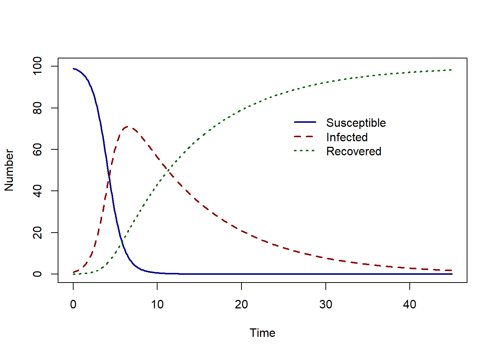
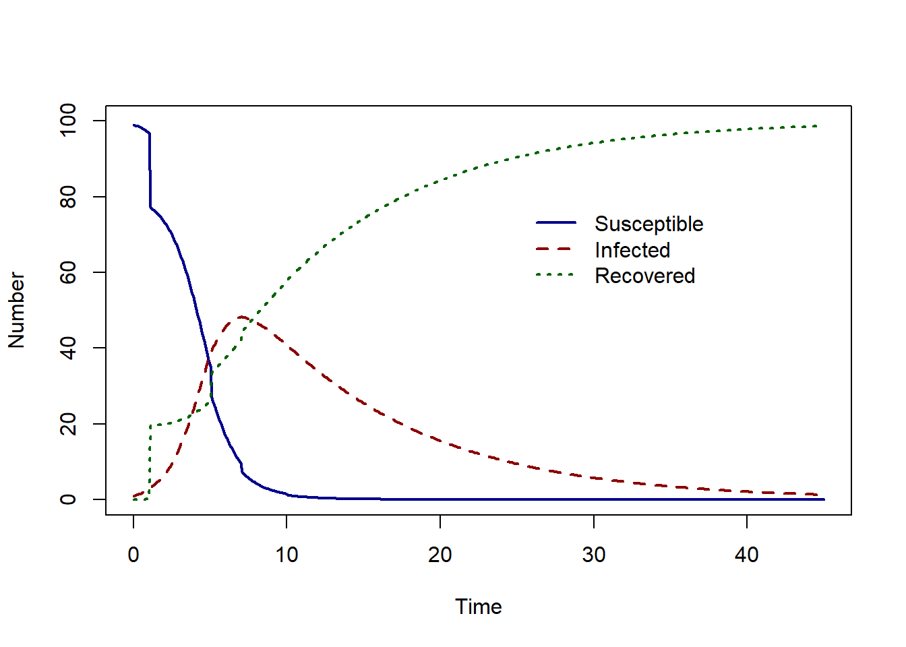
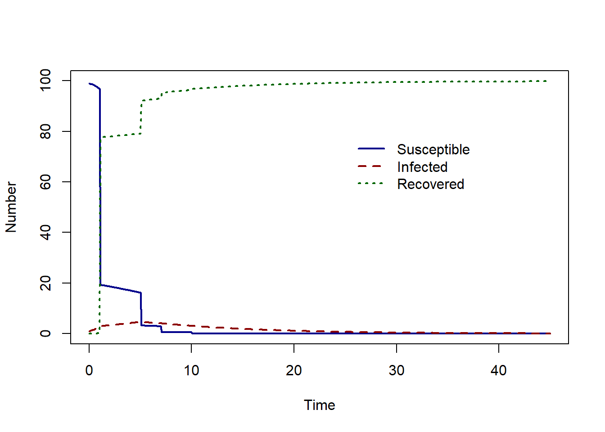

SIR_model <- function(time, state_var, pars) {
# Extract state variables
S <- state_var["S"]
I <- state_var["I"]
R <- state_var["R"]
N <- S + I + R
# Extract model parameters
beta <- pars["beta"]
gamma <- pars["gamma"]
# The differential equations
dS <- -beta * S * I / N
dI <- beta * S * I / N - gamma * I
dR <- gamma * I
# Return the equations as a list
sol <- list(c(dS, dI, dR))
return(sol)
}
# What are our parameter values?
pars <- c(beta = 1.2, gamma = 1 / 10)
# Define time to solve equations
times <- seq(from = 0, to = 45, by = 0.1)
# What are the initial values (or conditions) of the state variables?
I0 <- 1
N <- 100
S0 <- (N - I0)
R0 <- 0
state_var <- c(S = S0, I = I0, R = R0)
# Solve the Susceptible Infected equations over the vector of times , time
# with initial conditions
solution <- as.data.frame(ode(y = state_var, times = times, func = SIR_model,
parms = pars, method = rk4))Using events : vaccination
The ‘events’ function can be used to implement changes in the model at fixed times. In this example, we illustrate how to add vaccination at fixed time points in an SIR model.
SIR model dynamics
In this example, we assume an infection is spreading in a population represented by the Susceptible-Infected-Recovered (SIR) model.The SIR model is described by the following system of differential equations,
\[ \begin{aligned} \frac{dS}{dt} & = \beta S I/N\\ \frac{dI}{dt} &= \beta S I/N - \gamma I \\ \frac{dR}{dt} &=\gamma I \ \end{aligned} \] where \(S\), \(I\) and \(R\) denote the number of susceptible, infectious and recovered individuals respectively. The total population size is \(N = S + I + R\).The model parameters are the transmission rate \(\beta\) and the recovery rate \(\gamma\).
We assume a daily transmission rate of \(\beta = 1.2\), and a recovery rate of \(\gamma = 1/10\). The model solution for given one infected individual in a population of 100 is shown below.

The epidemic peak occurs at time 6.5 with 71.04 infected individuals.
We wish to see the effects of vaccination at fixed time points on the dynamics of infection. To do this we will use ‘events’ in the R package deSolve.
Events
First, we must write a function that describes what happens if an event is triggered. The inputs must be the current time of the integration, the current estimated of the state variables and the parameter vector.
In this example, an event is vaccination. We implement a simplified vaccination process where a proportion \(p\) of the susceptible population is vaccinated and immediately moved to the recovered class.
event_vaccinate <- function(times, state_var, parms) {
# Extract needed state variables
S <- state_var["S"]
R <- state_var["R"]
# Extract needed model parameters
p <- parms["p"]
# Changes to the state variable due to vaccination
state_var["S"] <- S - S * p
state_var["R"] <- R + S * p
return(state_var)
}In the function ode we must specify the event function and the time points at which the event should occur.
Example
Assuming that 20% of the susceptible population is vaccinated on day 1, 5, 7, 10 the we find the solution as follows:
pars <- c(beta = 1.2, gamma = 1 / 10, p = 0.2)
solution <- as.data.frame(ode(y = state_var, times = times, func = SIR_model,
parms = pars,
events = list(func = event_vaccinate,
time = c(1, 5, 7, 10))))
The epidemic peak now occurs at time 7 with 48.24 infected individuals.
Let’s compare this to a much higher proportion of vaccination and set \(p=0.8\).

The epidemic peak now occurs at time 5 with 4.64 infected individuals.
Events can also be triggered by separate functions instead of occurring at fixed time points, or events can be specified in data frames. For more examples and further reading: